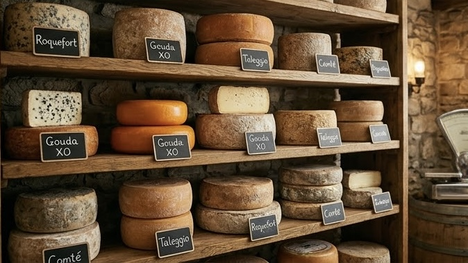
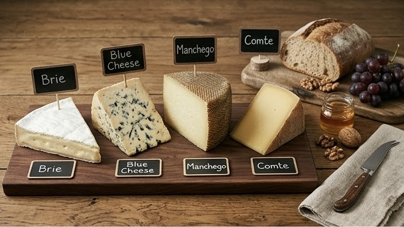
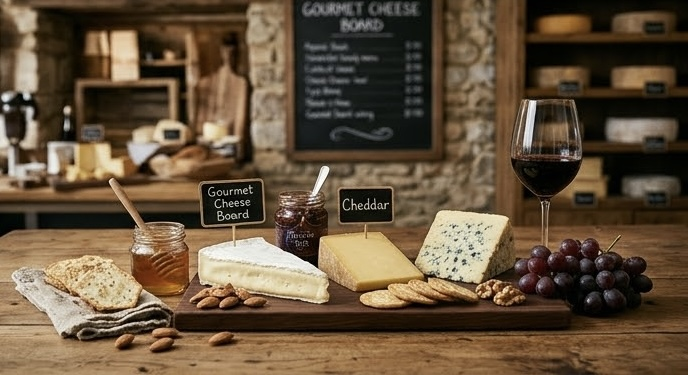

法國・塞納馬恩省
布里起司 Brie
白色外皮包裹柔軟乳心，入口像奶油般滑順，帶有蘑菇與熟成堅果的溫柔香氣。適合初次踏入起司世界的你。
柔和濃郁

Aged with patience, shared with love.A SHOP WITH A STORY
起司日常從一張餐桌開始。幾位熱愛旅行與美食的夥伴，把在歐洲小店嚐到的感動帶回來，想讓每個人都能輕鬆找到喜歡的那一味。
我們相信，好起司不必等到特別的日子。用心挑選每一份乳香、耐心照料每一段熟成，邀你在日常裡，慢慢品味土地與時間。
林予安風味選品・尋找下一口驚喜
陳以樂熟成照料・守候時間的滋味
許沐晴餐桌提案・分享好好生活
A CROWD-PLEASING CLASSIC
外層柔白如霜，切開後是細緻綿密的奶油質地。蘑菇與淡淡堅果香在舌尖慢慢展開，配上一片酸種麵包，就是最迷人的簡單。

A WORLD OF CHEESE
每一種起司，都有自己
獨一無二的個性。

A TABLE FOR EVERY TASTE